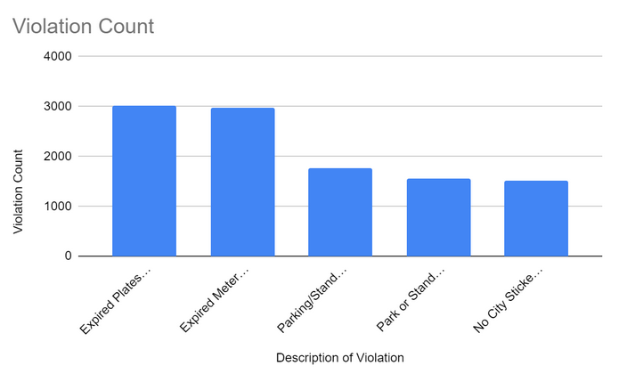

Take it to the Streets is a non-profit dedicated to helping black motorists fight for their rights as citizens of Chicago. Black motorists are disproportionately targeted by the city's parking fines and tickets. The punishments for not paying debts are not only steeper fines but may even lead to the suspension of a motorist's driver's license.
The city has taken measures to help combat this epidemic but there is still a large amount of work to be done.
Our Purpose
To inform Chicago motorists of their rights, provide a list of disputing options, and empower motorists to fight against predatory policing practices. We have
The Odds are in Your Favor!
Unlike popular belief motorists have a strong chance of winning ticket disputes. In fact 60% of all challenged tickets end up with the motorist winning. Even though only 10% of motorists dispute tickets. The odds are in your favor. Do an appeal today!
Motorist Hearing Results

Ward 3 Violation CountsWard 3 Chicago
Penalties for Unpaid Tickets
Penalties for Unpaid tickets punish repetitive behavior
Ticket Prices: $25.00-$150.00
Fine amount doubles (after 25 days)
Boot car for 24 hours (if 3+ tickets)
Car towed to an impound
Booting and impounding fees
$60.00-$400.00 boot fee
$150-$250.00 towing fee
$20-$60 per day your vehicle spends at the pound, for the first five (5) days